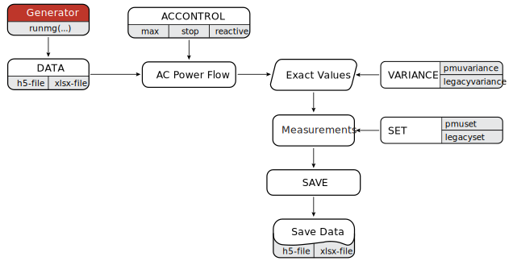

Measurement Generator
The function uses the AC power flow analysis to generate measurements. The standalone measurement generator produces measurement data in the form described earlier in the state estimation module.
Run Settings
The standalone measurement generator receives inputs for measurement variances, and inputs for measurement sets, to produce measurement data and exports those in h5-file or xlsx-file. The settings should be given as input arguments of the function runmg(...).
Although the syntax is given in a certain order, for methodological reasons, only DATA must appear, and the order of other inputs is arbitrary, as well as their appearance.
Syntax
runmg(DATA)
runmg(DATA; ACCONTROL)
runmg(DATA; ACCONTROL, SET)
runmg(DATA; ACCONTROL, SET, VARIANCE)
runmg(DATA; ACCONTROL, SET, VARIANCE, SAVE)Description
runmg(DATA) computes AC power flow problem
runmg(DATA; ACCONTROL) sets variables for the AC power flow
runmg(DATA; ACCONTROL, SET) defines the measurement set (in-service and out-service)
runmg(DATA; ACCONTROL, SET, VARIANCE) defines measurement values using predefined variances
runmg(DATA; ACCONTROL, SET, VARIANCE, SAVE) exports measurements and power system dataExamples
julia> runmg("case14.xlsx"; pmuset = "optimal")julia> runmg("case14.xlsx"; pmuset = ["Iij" 5, "Vi" 2])julia> runmg("case14.xlsx"; pmuset = ["Iij" 5, "Vi" 2], legacyset = ["Pij" 4, "Qi" 8])julia> runmg("case14.h5"; legacyset = ["redundancy" 3.1], legacyvariance = ["all" 1e-4])julia> runmg("case14.h5"; pmuset = "all", legacyset = "all", pmuvariance = ["all" 1e-5], legacyvariance = ["all" 1e-4])Input Variable Arguments
DATA
| Example | Description |
|---|---|
"case14.h5" | loads the power system data from the package |
"case14.xlsx" | loads the power system data from the package |
"C:/case14.xlsx" | loads the power system data from a custom path |
Input Keyword Arguments
ACCONTROL
| Command | Description |
|---|---|
max = value | specifies the maximum number of iterations for the AC power flow, default setting: 100 |
stop = value | specifies the stopping criteria for the AC power flow, default setting: 1.0e-8 |
reactive = 1 | forces reactive power constraints, default setting: 0 |
solve = "mldivide" | mldivide linear system solver, default setting |
solve = "lu" | LU linear system solver |
SET (phasor measurements)
| Command | Description |
|---|---|
pmuset = "all" | all phasor measurements are in service |
pmuset = "optimal" | deploys phasor measurements according to the optimal PMU location using "GLPK" solver, where the system is completely observable only by phasor measurements |
pmuset = ["redundancy " value] | deploys random angle and magnitude measurements measured by PMUs according to the corresponding redundancy |
pmuset = ["device" value] | deploys voltage and current phasor measurements according to the random selection of PMUs placed on buses |
pmuset = ["Iij" value, "Dij" value, "Vi" value, "Ti" value] | deploys phasor measurements according to the random selection of measurement types[1] |
SET (legacy measurements)
| Command | Description |
|---|---|
legacyset = "all" | all legacy measurements are in-service |
legacyset = ["redundancy " value] | deploys random selection of legacy measurements according the corresponding redundancy |
legacyset = ["Pij" value, "Qij" value, "Iij" value, "Pi" value, "Qi" value, "Vi" value] | deploys legacy measurements according to the random selection of measurement types[2] |
If any of the keyword arguments referring to SET are omitted, measurements to which it relates will be marked as out-services. In other words, default settings for keywords pmuset and legacyset are out-services.
Further, the keyword arguments accept any key subset of measurements (Iij, Dij, Vi, Ti or Pij, Qij, Iij, Pi, Qi, Vi), that is, it is not necessary to define attributes for all measurements.
VARIANCE (phasor measurements)
| Command | Description |
|---|---|
pmuvariance = ["all" value] | applies fixed-value variance over all phasor measurements |
pmuvariance = ["random" min max] | selects variances uniformly at random within limits, applied over all phasor measurements |
pmuvariance = ["Iij" value, "Dij" value, "Vi" value, "Ti" value] | predefines variances over a given subset of phasor measurements[1] |
VARIANCE (legacy measurements)
| Command | Description |
|---|---|
legacyvariance = ["all" value] | applies fixed-value variance over all phasor measurements |
legacyvariance = ["random" min max] | selects variances uniformly at random within limits, applied over all phasor measurements |
legacyvariance = ["Pij" value, "Qij" value, "Iij" value, "Pi" value, "Qi" value, "Vi" value] | predefines variances over a given subset of phasor measurements[2] |
If any of the keyword arguments referring to VARIANCE are omitted, measurements to which it relates will be marked as measurements with variances equal to 1e-8 as default setting for keywords pmuvariance and legacyvariance.
Same as before, the keyword arguments accept any key subset of measurements (Iij, Dij, Vi, Ti or Pij, Qij, Iij, Pi, Qi, Vi), that is, it is not necessary to define attributes for all measurements.
Flowchart
The measurement generator flowchart depicts the algorithm process according to user settings.

- 1Complete phasor measurement set contains branch current magnitude Iij, branch current angle Dij, bus voltage magnitude Vi and bus voltage angle Ti measurements.
- 2Complete legacy measurement set contains active power flow Pij, reactive power flow Qij, branch current magnitude Iij, active power injection Pi, reactive power injection Qi and bus voltage magnitude Vi measurements.